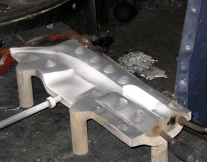
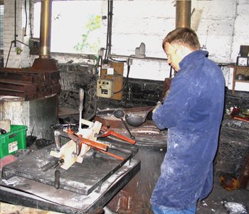
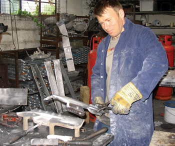
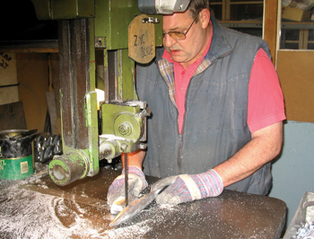
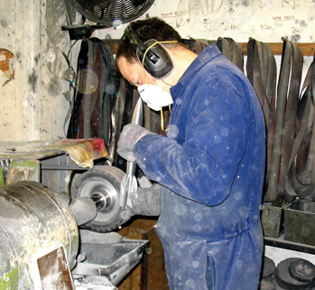
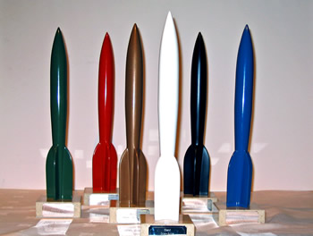

By Peter Weston
Economics is the problem. Technically, there’s no real difficulty in making the Hugo rocketship, and if we needed several thousand of them we’d be fighting-off people who wanted the contract. But when a worldcon committee says they need twenty, maybe thirty on a good year, any sensible industrialist starts backing away rapidly.
Which is where I come in – I’m not ‘sensible’. Back in 1983 I was visiting Los Angeles on a sales trip for my company (although in those days it wasn’t actually ‘my’ company, that came about a bit later) and I called on Craig Miller, whose job was to obtain the Awards for the following year’s Worldcon. Craig took note of the chrome-plated ‘Jaguar’ mascots I was hawking around, and asked me if I could make his rockets in the same way.
“How much have worldcons been paying?” I asked.
“$100.00 each,” he said, “and they’re not very good.”
“I bet I could make them for half that much!” I said, boldly, and went back to England to study the problem.

Now, the Hugo rocket is actually quite a complex shape, with subtle curves and four tail-fins, and you do need a nice, bright, unblemished finish. Back in 1953 the very first Hugos were hand-made, when Maryland fan Jack McKnight recklessly agreed to machine them out of a solid bar of stainless steel. He worked all through the convention weekend in his machine-shop, finishing just in time for the presentation – thank goodness that year they only presented the awards in six categories!
Worldcon committees have tried various ways to make the Hugo. In 1956 Dave Kyle got away with using hood-mascots from an Oldsmobile model, fixed to a vertically-mounted piece of wood. In 1967 Ted White’s NYCon moulded their Hugos in translucent plastic, only to be outdone by the ‘Invisible’ Hugos at Torcon in 1973 (their rockets weren’t ready in time and the winners were solemnly presented with the unadorned bases).

We’ve had aluminium Hugos, and fabricated bronze Hugos, but before I came along the rocket was usually made as a sand casting – generally using brass or some similar alloy, poured into an impression pressed into a bed of sand. This isn’t too difficult, but the surface finish is pretty rough and needs a lot of finishing. At the time I met Craig Miller I actually had one of these earlier rockets in my possession, the ‘spare’ left over from Seacon’79. It was fairly-well pitted with ‘meteor impacts’ as we jokingly called the various holes and scars, but I used it as the basis for my new production line.
The very best way to make a Hugo rocket would be with pressure diecasting, which would give an absolutely perfect casting with an excellent surface finish. A pressure die could make about one casting per minute – at a tooling cost of about $25,000 at 1983 prices. Not very practical for producing thirty per year! Instead, I decided to make a gravity die, a much simpler proposition. This only cost around $1000, and since by then I owned the company, I simply lost the cost somewhere in the book-keeping. Yes, I did make the 1984 Hugos for only $50.00 each. Here’s how;-

To begin, the tool-room created the die by machining-out the required impression in two blocks of special aluminium alloy, to give ‘top’ and ‘bottom’ halves, along with a ‘feeding point’ and ‘overflow’ cavities for the molten metal. We simplified the area around the tailfins and put some of the detail into two ‘core blocks’ which are inserted into the die and withdrawn once metal has been cast. Also, a series of male and female ‘mating points’ were added to each die half, so that they fit together accurately and consistently. (Some of these features can be seen in the first illustration). Now we could start to make some castings.
The first step is to heat the die halves and core-blocks with a blowtorch to a fairly high temperature. (This prevents ‘chilling’ – if hot metal was poured straight into a cold die it would create a brittle outer layer on the castings which would be troublesome at the finishing stages). Then the core-blocks are put into the bottom section, the top half of the die is fitted over it, and they are clamped securely together.

Next, the operator ladles hot metal from a nearby open-top furnace. This is a zinc/ aluminium alloy at a temperature of around 400 degrees Centigrade, and it is poured into the entry-point until the die is full (second illustration). A gravity diecasting is just that; the molten metal is not under any pressure and flows naturally, so it is important there are no obstructions and no air is trapped inside, which would create porosity. The ‘overflow’ cavities at side and bottom are helpful here, since they ensure a good pool of molten metal is available, which is drawn into the casting as it solidifies and contracts.
The die is allowed to stand for ten minutes or so, before it is unclamped and taken apart so that the casting can be removed (third illustration). At this stage the long feeder ‘sprue’ is still attached to the nose, with an overflow block on the side (fourth illustration). These are cut-off with a band-saw, (fifth illustration) leaving a residual ‘witness’, or stub, at each point. These are dressed on a linishing belt (sixth illustration), where split-lines are also removed. We now have a finished casting, ready for polishing and plating.

As you can imagine, this is a slow and laborious process. Only three or four castings can be made per hour because of the time taken to assemble and dismantle the die, together with heating before pouring, and cooling before extraction. The pressure die-casting route would be much more sophisticated, with complex water-cooled tooling and a special machine that injects a charge of metal under great pressure. The two halves of the die open and cores are withdraw automatically, causing the casting to solidify instantly and be ejected before the cycle is repeated. These machines can operate at a speed of 500 ‘shots’ per day, but as we said earlier, we don’t need that many Hugos!
I have produced the Awards for every year since 1984 (apart from Chicago in 1993, which cleverly reverted to plastic models which self-destructed on their way home). My Hugo rockets have a mirror-bright polished finish, with chromium-plating to British motor-industry standards which will never peel or flake. They are actually plated in three stages; first, with a base layer of copper to act as a ‘key’, then a relatively heavy, 25-micron deposit of nickel (which provides the hardness and corrosion-resistance), followed by a top layer of chromium, to add the sparkle and brightness to the final product. You could leave your Hugo outside in the rain for ten years and it would still be in fine condition!

For 1992 (the fiftieth convention) and 2003 (the fiftieth Awards presentation) the Hugos were a little special, with a top coating of pure gold rather than chrome – (don’t get too excited, it was less than one micron thick!) They can be finished in any colour and for Glasgow in 2005 we even considered a tartan Hugo. Maybe that was going just a little bit too far, but we did put on a display of special coloured rockets, just to show what could be done!

[This article by Peter Weston first appeared in the souvenir book for Noreascon 4, the 2004 Worldcon, where Peter was a Guest of Honor. The article has been revised slightly for publication here.]